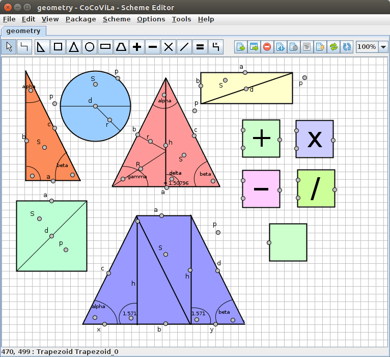
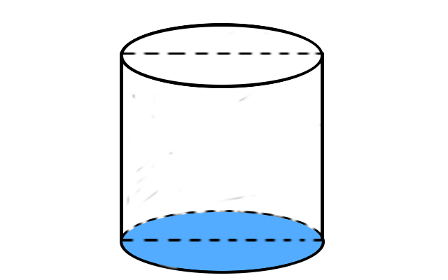
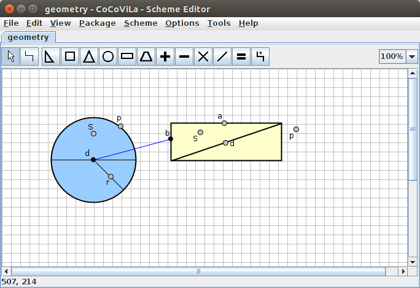
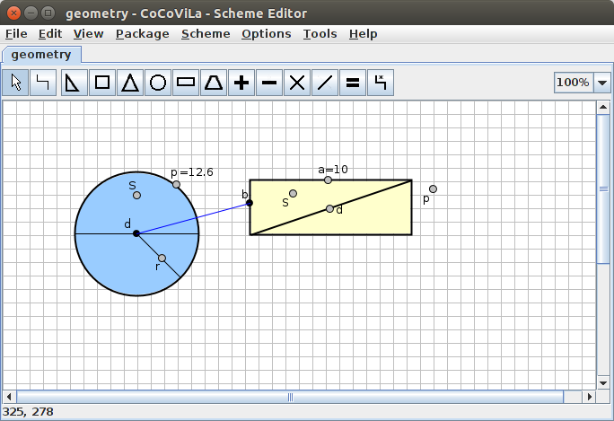
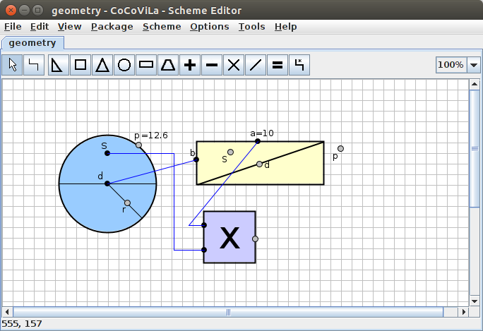
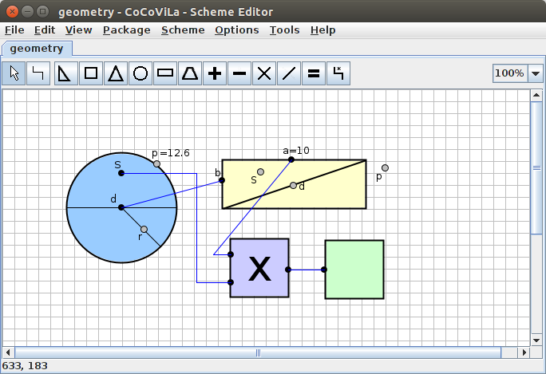
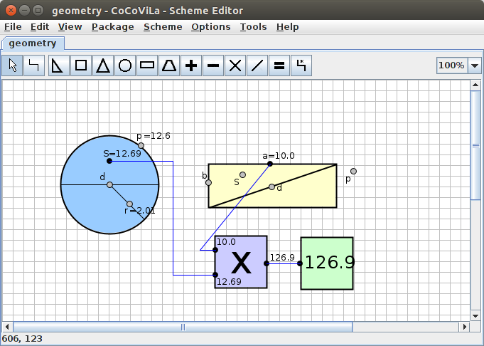

Geometry - A CoCoVila package that solves basic geometric problems.
This package consists of six shapes (a triangle, a trapezoid, a square, a circle, a right triangle and a rectangle), four operators ( "+", "-", "/" and "*"), a relation class and an answer block.
The package allows solving problems that consist of basic geometric shapes such as a circle, a triangle a trapezoid or a rectangle and basic operations such as summation, subtraction, multiplication and division. Any real object that consists of more complex shapes must be simplified in order to use with this package. It is also possible to calculate a volume of an object if the user manages to simplify the object. It is a good introductory package for someone who has never used CoCoViLa before. The geometry used is easy enough to understand quickly and the shapes are fun to play with.
For a quick example of what CoCoViLa and the geometry package can do, let's imagine a cylinder.
Now, the cylinder on the picture consists of a rectangle and two circles. Let's say that we wan't to calculate the volume of a cylinder we have. We have measured the cylinder and we know that it's height is 10 centimetres and it's perimeter is 12.6 centimetres.
In CoCoViLa the attributes of an object are represented as ports. Ports are in turn connected to the fields, that can be evaluated. If this is difficult to understand, don't worry, it will get cleared through examples. Below is the cylinder made up of two blocks in CoCoVila
The little dot's on the shapes are ports, mentioned in the previous section. The two connected ports are the diameter of the circle and the side of the rectangle. The connection between them means, that the diameter and the side are equal. Looking back on the cylinder, this should be easy to spot. By now, we have successfully created a cylinder, but we have yet to add our measurements to it.
Now, we know that the perimeter of the cylinder is 12.6 centimetres and the height of it is 10 centimetres. Let's add that to the scheme.
Magnificent! We have a cylinder with measurements. All that's left to do is to calculate the volume of the cylinder. The formula for that is: volume = Height * base. Great, let's add that to the scheme.
The geometry package also has a block for showing the answer. To see the answer, let's add that as well.
Now we should be all set to run the program, and calculate the volume of the cylinder. The result is down below
To learn exactly how to do this, you can continue with the next chapter
Next: Creating the scheme
The package can be downloaded from github.